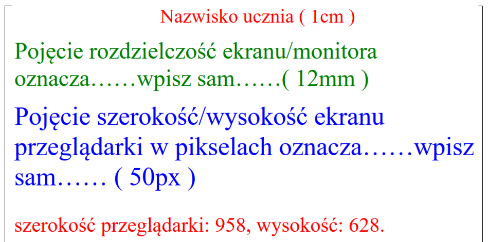

Trzaskalski
Pojęcie rozdzielczość ekranu/monitora oznacza Rozdzielczość ekranu określa liczbę pikseli, z których składa się obraz wyświetlany na monitorze, telewizorze lub innym wyświetlaczu.
Pojęcie szerokość/wysokość ekranu przeglądarki w pikselach oznacza Szerokość i wysokość ekranu przeglądarki w pikselach oznacza liczbę pikseli logicznych (CSS), które przeglądarka zgłasza jako dostępny obszar widoku

